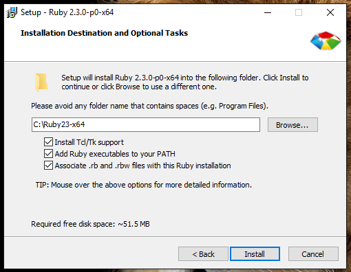
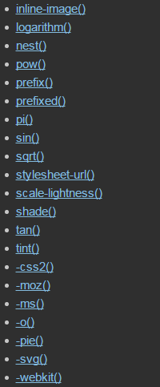
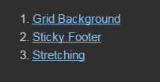
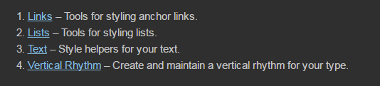

an awesome CSS preprocessor
Introductions
- What is Sass?
- Advantages and Disadvantages
- Requirements and Setups
- Conventions
Sass Features
- Variables
- Nesting
- Operators
- Conditional Statements
- Lists and Maps
- Looping
- Partials / Imports
- Inheritance
- Functions
- Mixins
- Comments
Other Discussion
- What is Compass?
- Knowing Compass
- Sass and Compass
- Best Practices in Sass
What is Sass?
- Syntactically awesome stylesheets
- scripting language that is interpreted into Cascading Style Sheets (CSS)
- designed by Hampton Catlin and developed by Natalie Weizenbaum
- first appeared in 2006
Advantages
and
Disadvantages
Advantages
- complex styles can be breakdown into pieces
- reusable / manageable code
- simplified code
- lots of reusable mixins and helpers
- fewer http requests
Disadvantages
- additional learning curve
- teams need to follow specific workflow
- you can't directly edit css files
- need to setup
Requirements
and
Setups
Requirements
- Ruby
- Compass
- Sass
Setups
Install Ruby
On Windows
On Windows
On Windows
On Ubunto
Update Ruby Gems
On Windows
On Ubunto
install sass and compass
On Windows
On Ubunto
validate installations
On Windows
On Ubunto
Conventions
.scss vs .sass
.scss
.scss follows conventions of CSS
.sass
.sass focuses on indentation and shorthand
Sass Features
Variables
Variables (cont.)
Nesting
Nesting (cont.)
Operators
Sass has a handful of standard math operators like +, -, *, /, and %.
Operators (cont.)
Conditional Statements
Lists and Maps
Lists and Maps (cont.)
Looping
Sass provides data structures such as lists and maps and iterate using For, Each and While.
Looping (cont.)
Looping (cont.)
Looping (cont.)
Looping (cont.)
Looping (cont.)
Partials / Imports
Inheritance
Inheritance (cont.)
Functions
Functions (cont.)
Mixins
Mixins (cont.)
Comments
What is Compass?
Compass is a Sass-based Stylesheet Framework that streamlines the creation and maintenance of CSS.
Knowing Compass
Easy to create new project
. . .
config.rb
Compile SCSS to CSS
More on Compass
- CSS3
- Helpers functions
- Layout
- Reset
- Typography
- Utilities
Compass CSS3
@import "compass/css3"
Compass Helpers Functions

Compass Layout
@import "compass/layout"
Compass Reset
@import "compass/reset"Compass Typography
@import "compass/typography"
Compass Utilities
@import "compass/utilities"
Sass and Compass
reset
reset (cont.)
Sprites
Sprites (cont.)
let's get our hand dirty for a bit :)
Best practices
Structure your Sass
Use variables effectively
Use variables effectively (cont.)
Use mixins and functions appropriately
Use mixins and functions appropriately (cont.)
Embrace placeholders
Embrace placeholders (cont.)
Order your work
- Place all mixins, functions, placeholders and variables in their relevant partial file.
- Site-wide elements should be kept together in a base folder.
- Module-specific / view-specific mixins, functions, and variables should be kept within the correct module’s partial file.
Order your work (cont.)
Limit nesting
- Never go more then 3 levels deep.
- Ensure the CSS output is clean and reusable.
- Use nesting when it makes sense to, not as a default option.
Keep things simple
Questions?
References
Thanks :)
available on github.com
https://github.com/abcantuangco/Introduction-to-Sass